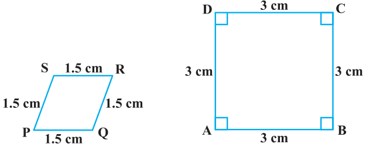

EXERCISE 6.1
- 1.Fill in the blanks using the correct word given in brackets :
- (i)All circles are ________. (congruent, similar)
- (ii)All squares are ________. (similar, congruent)
- (iii)All ________ triangles are similar. (isosceles, equilateral)
- (iv)Two polygons of the same number of sides are similar, if (a) their corresponding angles are ________ and (b) their corresponding sides are ________. (equal, proportional)
- 2.Give two different examples of pair of
- (i)similar figures.
- (ii)non-similar figures.
- 3.State whether the following quadrilaterals are similar or not:
